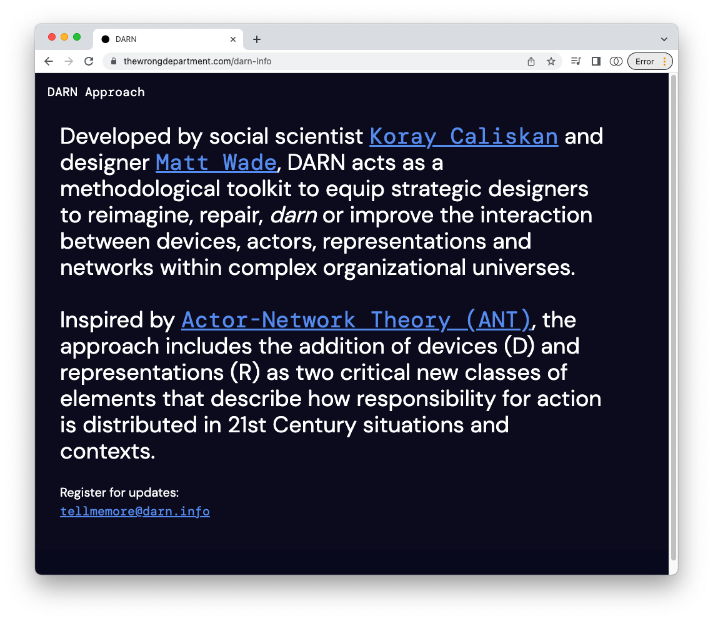

Together with Social Scientist and academic Koray Caliskan, our co-founder Matt Wade published a paper with She Ji: The Journal of Design, Economics, and Innovation, that outlines an approach we co-developed, called the DARN Approach.
DARN acts as a methodological toolkit to equip strategic designers to reimagine, repair, darn or improve the interaction between devices, actors, representations and networks within complex organizational universes.
Inspired by Actor-Network Theory (ANT), the approach includes the addition of devices (D) and representations (R) as two critical new classes of elements that describe how responsibility for action is distributed in 21st Century situations and contexts.

The Darn information hub
Design theory
Sociology
Design strategy
Academic writing